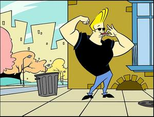

About Johnny Bravo!
Welcome on website about the best cartoon character, Johnny Bravo!
Johnny Bravo is an American animated television series.
It centers around the boorish and muscular title character,
who tries to get women to date him, but is usually unsuccessful.
The series was created by Van Partible for Cartoon Network.(Thanks Van!:))
Johnny's Charateristics:
- He spends a lot of time flexing and admiring himself in mirrors.
- He is known for his blonde pompadour hairstyle, and his catchphrase, "Ooh, mama!"
- He is a muscular and vain man
- He often finds himself in comical situations as a result of his actions
Johnny's Friends:
Meet the friends of Johnny Bravo, the ultimate ladies man, who despite his best efforts, never seems to win the hearts of the women he desires. Click on the link below to read more about them:
